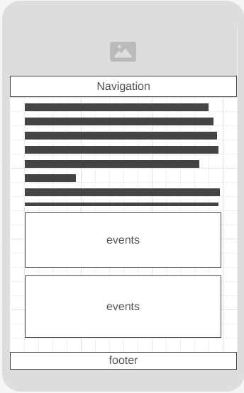
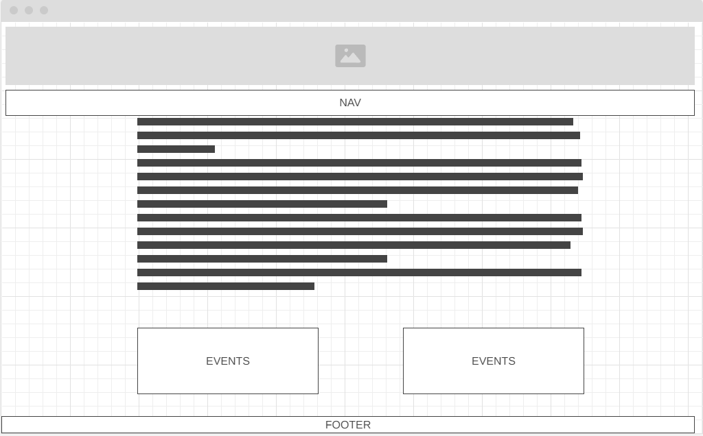

Site Name
Arima Borough Chamber of Commerce
The site name was selected to clearly represent the local town of Arima and its chamber of commerce, emphasizing its role in promoting business and community activities within the borough.
Site Purpose
The purpose of the Arima Borough Chamber of Commerce website includes:
- To promote local businesses and attract new investments.
- To provide a platform for community and cultural events, business networking, and resource sharing among members and the public.
Scenarios
Possible questions from site visitors include:
- What events will the chamber be holding this month that promote business-to-business networking?
- Where can I find contact information for the chamber's board of directors?
- What resources are available for new businesses in the Borough of Arima?
Color Schema
The selected color scheme reflects the chamber's professional and welcoming nature:
Heading Color: #A6D0DD
Background Color: #FFF9DE
Accent Color: #FFD3B0
Background Color: #FFF9DE
Accent Color: #FFD3B0
Typography
The typography choices for the website include:
- Heading Font: Arial, sans-serif
- Body Font: Arial, sans-serif
These fonts were chosen for their readability and professional appearance.
Wireframe
Below is a rough sketch of the homepage layout for both mobile and desktop views:
Mobile View:
Desktop View:
